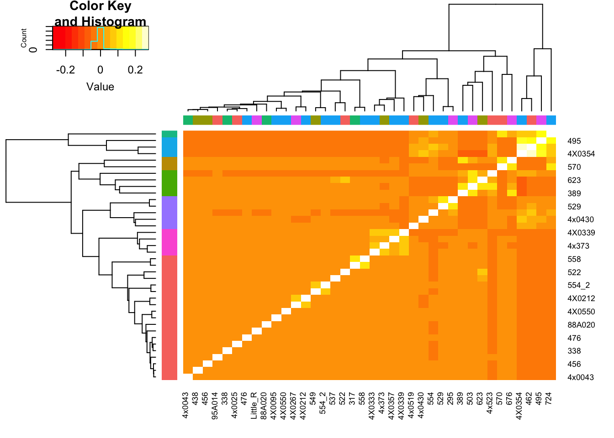

ResponseToReviewer_Point6
Last updated: 2020-09-23
Checks: 6 1
Knit directory: Comparative_eQTL/analysis/
This reproducible R Markdown analysis was created with workflowr (version 1.5.0). The Checks tab describes the reproducibility checks that were applied when the results were created. The Past versions tab lists the development history.
The R Markdown file has unstaged changes. To know which version of the R Markdown file created these results, you’ll want to first commit it to the Git repo. If you’re still working on the analysis, you can ignore this warning. When you’re finished, you can run wflow_publish to commit the R Markdown file and build the HTML.
Great job! The global environment was empty. Objects defined in the global environment can affect the analysis in your R Markdown file in unknown ways. For reproduciblity it’s best to always run the code in an empty environment.
The command set.seed(20190319) was run prior to running the code in the R Markdown file. Setting a seed ensures that any results that rely on randomness, e.g. subsampling or permutations, are reproducible.
Great job! Recording the operating system, R version, and package versions is critical for reproducibility.
Nice! There were no cached chunks for this analysis, so you can be confident that you successfully produced the results during this run.
Great job! Using relative paths to the files within your workflowr project makes it easier to run your code on other machines.
Great! You are using Git for version control. Tracking code development and connecting the code version to the results is critical for reproducibility. The version displayed above was the version of the Git repository at the time these results were generated.
Note that you need to be careful to ensure that all relevant files for the analysis have been committed to Git prior to generating the results (you can use wflow_publish or wflow_git_commit). workflowr only checks the R Markdown file, but you know if there are other scripts or data files that it depends on. Below is the status of the Git repository when the results were generated:
Ignored files:
Ignored: .DS_Store
Ignored: .RData
Ignored: .Rhistory
Ignored: .Rproj.user/
Ignored: WorkingManuscript.zip
Ignored: WorkingManuscript/
Ignored: analysis/.DS_Store
Ignored: analysis/.Rhistory
Ignored: analysis_temp/.DS_Store
Ignored: big_data/
Ignored: code/.DS_Store
Ignored: code/snakemake_workflow/.DS_Store
Ignored: code/snakemake_workflow/.Rhistory
Ignored: data/.DS_Store
Ignored: data/PastAnalysesDataToKeep/.DS_Store
Ignored: figures/
Ignored: output/.DS_Store
Untracked files:
Untracked: analysis/20200907_Response_Point_02.Rmd
Untracked: analysis/20200907_Response_Point_04.Rmd
Untracked: data/c5.all.v7.1.symbols.gmt
Untracked: data/c5.all.v7.1.symbols.gmt.categories.tsv.gz
Untracked: data/h.all.v7.1.symbols.gmt
Unstaged changes:
Modified: analysis/20200907_Response_OriginalComments.Rmd
Modified: analysis/20200907_Response_Point_06.Rmd
Modified: analysis/20200907_Response_Point_09-2.Rmd
Modified: analysis/20200907_Response_Point_09.Rmd
Modified: analysis/20200907_Response_Point_11.Rmd
Modified: analysis/Final_2_DispersionPlots.Rmd
Modified: analysis_temp/TabulaMuris_analysis2.Rmd
Note that any generated files, e.g. HTML, png, CSS, etc., are not included in this status report because it is ok for generated content to have uncommitted changes.
These are the previous versions of the R Markdown and HTML files. If you’ve configured a remote Git repository (see ?wflow_git_remote), click on the hyperlinks in the table below to view them.
| File | Version | Author | Date | Message |
|---|---|---|---|---|
| Rmd | 25874ad | Benjmain Fair | 2020-09-10 | update site |
| html | 25874ad | Benjmain Fair | 2020-09-10 | update site |
| Rmd | 5f95cbc | Benjmain Fair | 2020-09-10 | update site |
| html | 5f95cbc | Benjmain Fair | 2020-09-10 | update site |
Original reviewer point:
I would like to see more discussion about the inter-relatedness of the chimpanzees in the analysis of gene expression. Is that contributing to the power of the DE analysis, which has really high numbers of DE genes. That may certainly be due to the large samples size, but should be addressed. Related to that, the support that the gene-wise dispersion estimates are well correlated in humans and chimpanzees overall (Fig1C, and S4) seems qualitative. It looks like the chimpanzees might have less dispersion overall?
I will address the first point (about relatedness in DE analysis) two ways. Firstly, I will use variance partition to argue that the relatedness of some of the chimps probably has little impact on the interspecies DE analysis, given that a relatively much larger fraction of variance will probably be explained species, batch, etc. Then I will empricially address this by reperforming DE analysis with subsamples of chimps that have some relatively high degree of inter-relatedness, compared to subsamples that do not have such relatedness.
First load necessary libraries for analysis…
library(tidyverse)
library(gplots)
library(readxl)
library(scales)
library(variancePartition)
library('limma')
library('edgeR')
library(pbapply)
library(knitr)
library(readxl)
source("../code/CustomFunctions.R")Load relatedness matrix and RNA-seq sample batch info
#Relatedness matrix
SampleLabels <- read.table('../output/ForAssociationTesting.temp.fam', stringsAsFactors = F)$V2
GemmaMatrix <- as.matrix(read.table('../output/GRM.cXX.txt'))
colnames(GemmaMatrix) <- SampleLabels
row.names(GemmaMatrix) <- SampleLabels
#Metadata like RNA-seq batch
Metadata<-read_excel("../data/Metadata_SequencedChimps.xlsx")
Metadata$RNA.Extract_date %>% unique() %>% length()[1] 5Metadata$RNA.Library.prep.batch %>% unique() %>% length()[1] 5Colors <- data.frame(Numbers=1:5, Colors=hue_pal()(5))
BatchColor <- data.frame(IndividualID=as.character(colnames(GemmaMatrix))) %>%
left_join(Metadata, by=c("IndividualID"="IndividualID (as listed in vcf)")) %>%
dplyr::select(IndividualID, RNA.Library.prep.batch) %>%
left_join(Colors, by=c("RNA.Library.prep.batch"="Numbers")) %>%
pull(Colors) %>% as.character()
diag(GemmaMatrix) <- NA #For plotting purposes, just don't show the diagonol so that the color scale is better for non-diagnol entries
hclustfunc <- function(x) hclust(x, method="complete")
distfunc <- function(x) dist(x,method="euclidean")
d <- distfunc(GemmaMatrix)
fit <- hclustfunc(d)
groups <- cutree(fit, k=7)
NumbersToColors <- function(NumberVector){
N <- length(unique(NumberVector))
Key <- setNames(hue_pal()(N), 1:N)
return(list(ColorVector=recode(NumberVector, !!!Key), Key=Key))
}
ClusterGroupColors <- NumbersToColors(groups)
heatmap.2(GemmaMatrix, trace="none", RowSideColors = ClusterGroupColors$ColorVector, ColSideColors = BatchColor)
Column colors are RNA library prep batch, row colors are cluster groups (cutree function). I may pick out some of those somewhat related sample blocks for DE analysis…
Groups.df<-as.data.frame(groups) %>% rownames_to_column("Ind")
GemmaMatrix %>% as.data.frame() %>%
rownames_to_column("IndA") %>%
gather(key="IndB", value="Kinship", -IndA) %>%
left_join(Groups.df, by=c("IndA"="Ind")) %>%
left_join(Groups.df, by=c("IndB"="Ind"), suffix=c(".A.group", ".B.group")) %>%
filter(groups.A.group==groups.B.group & !IndA==IndB) %>%
mutate(uniqueID = paste0(pmax(IndA, IndB), pmin(IndA, IndB))) %>%
distinct(uniqueID, .keep_all=T) %>%
mutate(groups.A.group=factor(groups.A.group)) %>%
ggplot(aes(x=groups.A.group, y=Kinship, color=groups.A.group)) +
geom_boxplot(outlier.shape = NA) +
geom_jitter(position=position_jitter(0.2)) +
ylab("Pairwise kinship coefficients within cluster") +
xlab("Cluster") +
scale_colour_manual(name = "ClusterGroup",values = ClusterGroupColors$Key) +
theme_bw() +
theme(legend.position = "none")Now let’s select samples from cluster 1,3,6,7, and perform DE analysis using only 4 samples (4Chimp + 4Human) from each cluster and compare. If relatedness plays a big (meaningful) role, I expect meaningful differences in the the number of DE genes, the fraction of false discoveries, etc. Since clusters 3, and 7 only have 4 or 5 samples, I will use all 4 samples from these clusters. For cluster6, I will exclude the least related sample (smallest average pairwase intra-cluster relatedness). For cluster1, since there are so many samples, most of which have small relatedness coefficients, I exclude the 6 samples with a relatedness coefficient > 0.05, (leaving all unrelated samples) and randomly draw (with replacement) subsamples of 4 for DE analysis, repeating this procedure many times to establish a null distribution to compare clusters 3,6 & 7.
#First, create a dataframe containing only the samples that will be considered for further analysis as described above.
#Show cluster identities:
Groups.df %>% head() %>% kable()| Ind | groups |
|---|---|
| 549 | 1 |
| 570 | 2 |
| 389 | 3 |
| 456 | 1 |
| 623 | 3 |
| 438 | 1 |
#Get the 4 samples to include for cluster3
Cluster3.Pool <- Groups.df %>% filter(groups==3) %>% pull(Ind)
#Get the 4 samples to include for cluster7
Cluster7.Pool <- Groups.df %>% filter(groups==7) %>% pull(Ind)
#Get samples to include from cluster6
#I want to include 4/5 in that cluster, excluding the sample with lowest mean pairwise kinship.
CLuster6.MeanpairwiseKinship <- GemmaMatrix %>% as.data.frame() %>%
rownames_to_column("IndA") %>%
gather(key="IndB", value="Kinship", -IndA) %>%
left_join(Groups.df, by=c("IndA"="Ind")) %>%
left_join(Groups.df, by=c("IndB"="Ind"), suffix=c(".A.group", ".B.group")) %>%
distinct(uniqueID, .keep_all=T) %>%
filter(groups.A.group==6 & groups.B.group==6 & !IndA==IndB) %>%
group_by(IndA) %>%
summarize(MeanPairwiseKinship=mean(Kinship))
kable(CLuster6.MeanpairwiseKinship)| IndA | MeanPairwiseKinship |
|---|---|
| 295 | 0.0338598 |
| 4x0430 | -0.0009190 |
| 4x0519 | 0.0017661 |
| 529 | 0.0310048 |
| 554 | 0.0106422 |
Cluster6.Pool <- CLuster6.MeanpairwiseKinship %>%
filter(MeanPairwiseKinship>min(MeanPairwiseKinship)) %>% pull(IndA)
#Get cluster1 pool. I want to include all samples in cluter1 that do not have any related individuals (kinship coefficients > 0.05)
CLuster1.MaxpairwiseKinship <- GemmaMatrix %>% as.data.frame() %>%
rownames_to_column("IndA") %>%
gather(key="IndB", value="Kinship", -IndA) %>%
left_join(Groups.df, by=c("IndA"="Ind")) %>%
left_join(Groups.df, by=c("IndB"="Ind"), suffix=c(".A.group", ".B.group")) %>%
distinct(uniqueID, .keep_all=T) %>%
filter(groups.A.group==1 & groups.B.group==1 & !IndA==IndB) %>%
group_by(IndA) %>%
summarize(MaxPairwiseKinship=max(Kinship))
kable(CLuster1.MaxpairwiseKinship)| IndA | MaxPairwiseKinship |
|---|---|
| 317 | 0.1244824 |
| 338 | 0.0068539 |
| 438 | 0.0080694 |
| 456 | 0.0095653 |
| 476 | 0.0072819 |
| 4x0025 | 0.0072819 |
| 4x0043 | 0.0095653 |
| 4X0095 | 0.0150108 |
| 4X0212 | 0.0617353 |
| 4X0267 | 0.0617353 |
| 4X0550 | 0.0150108 |
| 522 | 0.0180964 |
| 537 | 0.0052832 |
| 549 | 0.0638122 |
| 554_2 | 0.0638122 |
| 558 | 0.1244824 |
| 88A020 | 0.0026078 |
| 95A014 | 0.0049990 |
| Little_R | 0.0180964 |
Cluster1.Pool <- CLuster1.MaxpairwiseKinship %>%
filter(MaxPairwiseKinship<0.05) %>% pull(IndA)
SamplesToDrawFrom <- cbind(Cluster1.Pool, Cluster3.Pool, Cluster6.Pool, Cluster7.Pool) %>%
as.data.frame() %>%
gather(key="Cluster", "Ind") %>%
distinct(.keep_all=T)
SamplesToDrawFrom %>% kable()| Cluster | Ind |
|---|---|
| Cluster1.Pool | 338 |
| Cluster1.Pool | 438 |
| Cluster1.Pool | 456 |
| Cluster1.Pool | 476 |
| Cluster1.Pool | 4x0025 |
| Cluster1.Pool | 4x0043 |
| Cluster1.Pool | 4X0095 |
| Cluster1.Pool | 4X0550 |
| Cluster1.Pool | 522 |
| Cluster1.Pool | 537 |
| Cluster1.Pool | 88A020 |
| Cluster1.Pool | 95A014 |
| Cluster1.Pool | Little_R |
| Cluster3.Pool | 389 |
| Cluster3.Pool | 623 |
| Cluster3.Pool | 503 |
| Cluster3.Pool | 4x523 |
| Cluster6.Pool | 295 |
| Cluster6.Pool | 4x0519 |
| Cluster6.Pool | 529 |
| Cluster6.Pool | 554 |
| Cluster7.Pool | 4x373 |
| Cluster7.Pool | 4X0333 |
| Cluster7.Pool | 4X0357 |
| Cluster7.Pool | 4X0339 |
Ok. So now I have pools of samples to draw from for clusters 1,3,6,7.
I will do one DE analysis for clusters 3,6,7, and many analyses for cluster1 to establish a null distribution of no relatedness. I think for this question it makes sense to make the repeated analysis with random from cluster1 sampling without replacement. So there are \(13 nCr 4 = 715\) possible combinations of samples to create this null distribution. That is a small enough number I will just do all of them to establish as rich of a null as possible.
But first, let’s choose the human samples to compare to for this DE analysis. I think there is no point in introducing randomness to the human samples drawn. But I think it does make sense to carefully choose them to be as high quality as possible, for example, by controlling for batch/lab. Therefore, I think I should use 4 human sampleschosen from Pavlovic et al in my DE analysis. Let’s pick these randomly.
ColColors <- ClusterGroupColors$ColorVector
ColColors[!(rownames(GemmaMatrix) %in% SamplesToDrawFrom$Ind)] <- NA
heatmap.2(GemmaMatrix, trace="none", RowSideColors = ClusterGroupColors$ColorVector, ColSideColors = ColColors)PairwiseKinshipBoxplot <- GemmaMatrix %>% as.data.frame() %>%
rownames_to_column("IndA") %>%
gather(key="IndB", value="Kinship", -IndA) %>%
left_join(Groups.df, by=c("IndA"="Ind")) %>%
left_join(Groups.df, by=c("IndB"="Ind"), suffix=c(".A.group", ".B.group")) %>%
filter(groups.A.group==groups.B.group & !IndA==IndB) %>%
filter(IndA %in% SamplesToDrawFrom$Ind & IndB %in% SamplesToDrawFrom$Ind ) %>%
mutate(uniqueID = paste0(pmax(IndA, IndB), pmin(IndA, IndB))) %>%
distinct(uniqueID, .keep_all=T) %>%
mutate(groups.A.group=factor(groups.A.group)) %>%
ggplot(aes(x=groups.A.group, y=Kinship, color=groups.A.group)) +
geom_boxplot(outlier.shape = NA) +
geom_jitter(position=position_jitter(0.2)) +
ylab("Pairwise kinship coefficients\nwithin cluster") +
xlab("Filtered kinship cluster") +
scale_colour_manual(name = "ClusterGroup",values = ClusterGroupColors$Key) +
theme_bw() +
theme(legend.position = "none", axis.text.x=element_blank())
PairwiseKinshipBoxplotNow let’s wrap the desired DE analysis into a function for easier repitition:
###Define function
DE.analysis <- function(DGE.NormalizedRawCountTable, Log2RPKMCountTable, ChimpSamples, HumanSamples){
AllSamplesToSubset <- c(ChimpSamples, HumanSamples)
CountTableSampled <- DGE.NormalizedRawCountTable[,AllSamplesToSubset]
SpeciesFactor <- colnames(CountTableSampled) %>% substr(1,1) %>% factor() %>% unclass() %>% as.character()
mm <- model.matrix(~0 + SpeciesFactor)
y <- voom(CountTableSampled, mm, normalize.method="cyclicloess", plot=F)
y$E <- Log2RPKMCountTable[,AllSamplesToSubset]
fit<- lmFit(y, mm)
contr <- makeContrasts(DE=SpeciesFactor1-SpeciesFactor2, levels = mm)
tmp <- contrasts.fit(fit, contrasts=contr)
efit <- eBayes(tmp)
Results <- topTable(efit, sort.by = "none", n=Inf)
return(Results)
}
###Create some of the required arguments
CountTableChimpFile <- '../output/PowerAnalysisFullCountTable.Chimp.subread.txt.gz'
CountTableHumanFile <- '../output/PowerAnalysisFullCountTable.Human.subread.txt.gz'
OutputDE <- '../output/Final/TableS2.tab'
DropFileName <- '../data/DE_SamplesToDrop.txt'
DropFile <- read.delim(DropFileName, sep='\t', col.names = c("Sample", "Species"), stringsAsFactors = F)
HumanSamplesToDrop <- DropFile %>% filter(Species=="Human") %>% pull(Sample)
ChimpSamplesToDrop <- DropFile %>% filter(Species=="Chimp") %>% pull(Sample)
DE.results <- read.delim(OutputDE, sep='\t', stringsAsFactors = F)
GeneListForOverdispersionCalculation <- DE.results$Ensembl_geneID
CountTables <- GetCountTables(CountTableChimpFile,
CountTableHumanFile,
0, GeneListForOverdispersionCalculation, ChimpSampleDrop=ChimpSamplesToDrop, HumanSampleDrop = HumanSamplesToDrop)
DGE.NormalizedRawCountTable <- cbind(CountTables$Chimp$Counts, CountTables$Human$Counts )
DGEList() %>%
calcNormFactors()An object of class "DGEList"
$counts
<0 x 0 matrix>
$samples
[1] group lib.size norm.factors
<0 rows> (or 0-length row.names)Log2RPKMCountTable <- cbind(CountTables$Chimp$log2RPKM, CountTables$Human$log2RPKM)
set.seed(0)
HumanSamples <- colnames(CountTables$Human$Counts)[CountTables$Human$Counts %>% colnames() %>% str_detect("SRR", negate = T)] %>%
sample(4)
ChimpSamples <- paste0("C.", Cluster3.Pool)
###print the required arguments to illustrate what is going on
DGE.NormalizedRawCountTable[1:10,1:10] %>% kable()| C | .4x0519 C | .4x373 C | .476 C | .4x0025 C | .438 C | .462 C | .4X0354 C | .503 C | .317 C | .623 |
|---|---|---|---|---|---|---|---|---|---|---|
| ENSG00000186891 | 46 | 73 | 20 | 28 | 4 | 11 | 98 | 13 | 11 | 3 |
| ENSG00000186827 | 274 | 393 | 313 | 397 | 173 | 128 | 975 | 236 | 307 | 84 |
| ENSG00000078808 | 5967 | 1931 | 7637 | 3892 | 2957 | 3745 | 1189 | 5857 | 4306 | 3704 |
| ENSG00000176022 | 1097 | 402 | 1574 | 1333 | 955 | 1235 | 416 | 1087 | 745 | 640 |
| ENSG00000184163 | 7 | 49 | 113 | 62 | 62 | 29 | 111 | 82 | 24 | 18 |
| ENSG00000160087 | 761 | 283 | 1153 | 776 | 471 | 610 | 275 | 920 | 547 | 604 |
| ENSG00000162572 | 7 | 4 | 17 | 2 | 5 | 16 | 12 | 11 | 9 | 10 |
| ENSG00000131584 | 2587 | 1537 | 3646 | 2546 | 1755 | 1323 | 4585 | 2250 | 1484 | 1872 |
| ENSG00000169972 | 282 | 78 | 396 | 257 | 209 | 282 | 111 | 243 | 141 | 252 |
| ENSG00000127054 | 3009 | 2009 | 7404 | 3300 | 3600 | 2092 | 3147 | 4403 | 2740 | 3116 |
Log2RPKMCountTable[1:10,1:10] %>% kable()| C.4x0519 | C.4x373 | C.476 | C.4x0025 | C.438 | C.462 | C.4X0354 | C.503 | C.317 | C.623 | |
|---|---|---|---|---|---|---|---|---|---|---|
| ENSG00000186891 | -0.4631141 | 1.5452701 | -1.7906428 | -0.7436310 | -2.7486168 | -2.037643 | 1.502654 | -1.8335368 | -1.867155 | -3.0690602 |
| ENSG00000186827 | 1.8312433 | 3.7552296 | 1.7373802 | 2.7719656 | 1.9481646 | 1.020653 | 4.595932 | 1.8981157 | 2.472714 | 0.8400153 |
| ENSG00000078808 | 4.9992002 | 4.7877280 | 5.0681744 | 4.7966794 | 4.7681080 | 4.602012 | 3.621035 | 5.2552587 | 5.012015 | 5.0089176 |
| ENSG00000176022 | 3.0009070 | 2.9687688 | 3.2341574 | 3.6942616 | 3.5811589 | 3.445338 | 2.551394 | 3.2700042 | 2.926360 | 2.9213715 |
| ENSG00000184163 | -3.1250345 | 0.5876174 | 0.1042405 | -0.0550313 | 0.3005269 | -1.218992 | 1.285548 | 0.2081517 | -1.277634 | -1.4597615 |
| ENSG00000160087 | 2.3164984 | 2.3055132 | 2.6277490 | 2.7569100 | 2.4056076 | 2.272207 | 1.798519 | 2.8713177 | 2.323592 | 2.6794380 |
| ENSG00000162572 | -4.2857112 | -3.8425882 | -3.5385672 | -5.0822034 | -4.0764170 | -3.142342 | -2.918254 | -3.5855126 | -3.656867 | -3.3581316 |
| ENSG00000131584 | 3.2105543 | 3.8747917 | 3.4183582 | 3.6009371 | 3.4321338 | 2.518798 | 4.982773 | 3.2921295 | 2.892687 | 3.4412337 |
| ENSG00000169972 | 2.2566182 | 1.8242974 | 2.4572966 | 2.5336727 | 2.6025630 | 2.528399 | 1.864482 | 2.3241553 | 1.747091 | 2.7869341 |
| ENSG00000127054 | 4.0532149 | 4.8857942 | 5.0644684 | 4.5997661 | 5.0927794 | 3.803711 | 5.064977 | 4.8847706 | 4.401255 | 4.8006463 |
HumanSamples[1] "H.63145" "H.62606" "H.59167" "H.59263"ChimpSamples[1] "C.389" "C.623" "C.503" "C.4x523"###Test the function
Results <- DE.analysis(DGE.NormalizedRawCountTable=DGE.NormalizedRawCountTable, ChimpSamples=ChimpSamples, Log2RPKMCountTable=Log2RPKMCountTable, HumanSamples=HumanSamples)
Results %>% head() %>% kable()| logFC | AveExpr | t | P.Value a | dj.P.Val | B | |
|---|---|---|---|---|---|---|
| ENSG00000186891 | 1.1813874 | -1.6752344 | 1.130220 | 0.2869894 | 0.4529246 | -5.551883 |
| ENSG00000186827 | -1.2248842 | 2.5200273 | -2.274735 | 0.0483767 | 0.1449773 | -4.895913 |
| ENSG00000078808 | 0.2885241 | 5.0609380 | 1.559132 | 0.1526664 | 0.3005444 | -6.245397 |
| ENSG00000176022 | 0.1927662 | 3.0497948 | 1.255078 | 0.2403959 | 0.4041648 | -6.572526 |
| ENSG00000184163 | -0.7863931 | 0.0711966 | -1.606493 | 0.1418966 | 0.2868254 | -5.390743 |
| ENSG00000160087 | 0.3136660 | 2.5227387 | 1.724462 | 0.1179827 | 0.2542184 | -5.893499 |
Ok, so I have a function to do the DE analysis. Let’s use it to compare all combinations of the Cluster1.Pool of chimp samples vs 4 human samples, and do a similar analysis but with the cluster3Pool, cluster6Pool, and cluster7Pool.
#First get all combinations of samples in cluster1Pool.
Cluster1.Combinations <- combn(Cluster1.Pool, 4, simplify = F)
Cluster1.Combinations.Pasted <- lapply(Cluster1.Combinations, function(iter) paste0("C.", iter))
length(Cluster1.Combinations.Pasted)[1] 715Cluster1.Combinations.Pasted[1:10][[1]]
[1] "C.338" "C.438" "C.456" "C.476"
[[2]]
[1] "C.338" "C.438" "C.456" "C.4x0025"
[[3]]
[1] "C.338" "C.438" "C.456" "C.4x0043"
[[4]]
[1] "C.338" "C.438" "C.456" "C.4X0095"
[[5]]
[1] "C.338" "C.438" "C.456" "C.4X0550"
[[6]]
[1] "C.338" "C.438" "C.456" "C.522"
[[7]]
[1] "C.338" "C.438" "C.456" "C.537"
[[8]]
[1] "C.338" "C.438" "C.456" "C.88A020"
[[9]]
[1] "C.338" "C.438" "C.456" "C.95A014"
[[10]]
[1] "C.338" "C.438" "C.456" "C.Little_R"Note that since this takes a long time to compute the DE results for 715 combinations, I will turn this code block to eval=F and write out the results, and read in the results in the next code block…
#iterate over combinations list, and calculate DE results for each
Cluster1.Combinations.Results <-pbapply::pblapply(Cluster1.Combinations.Pasted, function(iter) DE.analysis(HumanSamples=HumanSamples, Log2RPKMCountTable=Log2RPKMCountTable, DGE.NormalizedRawCountTable=DGE.NormalizedRawCountTable, ChimpSamples = iter))
#Write out results
saveRDS(Cluster1.Combinations.Results, file = "../big_data/Cluster1_DE_Results_AllCombinations.rds")Let’s start by plotting the number of DE genes (at a few FDR thresholds) when each of the clusters 3, 6, and 7 were used for the chimp samples, and compare it to the distribution across all 715 combinations from cluster 1.
#Read in results
Cluster1.Combinations.Results <- readRDS("../big_data/Cluster1_DE_Results_AllCombinations.rds")
Cluster1.Combinations.Results.df <- Cluster1.Combinations.Results %>%
lapply(add_rownames, "Ensembl_geneID") %>%
bind_rows(.id="CombinationNumber")
#DE analysis for other cluster groups
OtherClusters.df <- SamplesToDrawFrom %>% filter(!Cluster=="Cluster1.Pool") %>%
mutate(Ind=paste0("C.", Ind))
OtherClusters.list <- split(OtherClusters.df$Ind, OtherClusters.df$Cluster)
OtherClusters.Results <-pbapply::pblapply(OtherClusters.list, function(iter) DE.analysis(HumanSamples=HumanSamples, Log2RPKMCountTable=Log2RPKMCountTable, DGE.NormalizedRawCountTable=DGE.NormalizedRawCountTable, ChimpSamples = iter))
OtherClusters.Results.df <- OtherClusters.Results %>%
lapply(add_rownames, "Ensembl_geneID") %>%
bind_rows(.id="ClusterNumber") %>%
mutate(ClusterNumber=gsub("Cluster(\\d).Pool", "\\1", ClusterNumber))
NumResults <- OtherClusters.Results.df %>%
dplyr::select(adj.P.Val, ClusterNumber) %>%
mutate(FDR.10 = adj.P.Val < 0.10,
FDR.05 = adj.P.Val < 0.05,
FDR.01 = adj.P.Val < 0.01,) %>%
gather(key="FDR", value="Signif", -adj.P.Val, -ClusterNumber) %>%
group_by(ClusterNumber, FDR) %>%
summarise(NumSigGenes=sum(Signif))
ToPlotNumSig <- Cluster1.Combinations.Results.df %>%
dplyr::select(adj.P.Val, CombinationNumber) %>%
mutate(FDR.10 = adj.P.Val < 0.10,
FDR.05 = adj.P.Val < 0.05,
FDR.01 = adj.P.Val < 0.01,) %>%
gather(key="FDR", value="Signif", -adj.P.Val, -CombinationNumber) %>%
group_by(CombinationNumber, FDR) %>%
summarise(NumSigGenes=sum(Signif)) %>%
mutate(Cluster1.Combinations="1")
NumDE.Plot <- ggplot(ToPlotNumSig, aes(x=NumSigGenes)) +
# stat_ecdf(color=ClusterGroupColors$Key[1]) +
geom_density(aes(fill=Cluster1.Combinations)) +
geom_vline(data=NumResults, size=1, aes(xintercept=NumSigGenes, color=ClusterNumber)) +
facet_wrap(~FDR, scales="free_y") +
ylab("empirical probability density") +
xlab("Num DE genes") +
scale_colour_manual(name = "Cluster",values = ClusterGroupColors$Key, labels=NULL) +
scale_fill_manual(name = "All nCr(13,4)=715\ncombinations",values = ClusterGroupColors$Key, labels=NULL) +
theme_bw() +
theme(axis.text.x = element_text(angle = 45))
NumDE.PlotThe bimodal distribution is a bit odd, and probably reflects two or three “bad” samples in the group of 13 samples in cluster13 which skew results to less genes when randomly drawn. I suppose odd things are expected when randomly drawing from such a small sample size. In any case, I think we are fundamentally limited towards fully emperically quantifying the relatedness effect reviewers comment. But in any case, it doesn’t seem like there is any drastic effect.
Let’s make similar plots but plotting the empirical FDR (based on FDR<0.01 genes from the full data set as the ad hoc gold standard).
ToPlotFDR <- Cluster1.Combinations.Results.df %>%
dplyr::select(adj.P.Val, CombinationNumber, Ensembl_geneID) %>%
mutate(FDR.10 = adj.P.Val < 0.10,
FDR.05 = adj.P.Val < 0.05,
FDR.01 = adj.P.Val < 0.01) %>%
dplyr::select(FDR.10:FDR.01, CombinationNumber, Ensembl_geneID) %>%
gather(key="FDR", value="Signif", -CombinationNumber, -Ensembl_geneID) %>%
left_join(DE.results, by="Ensembl_geneID") %>%
mutate(TrueResponse = adj.P.Val < 0.01) %>%
mutate(CorrectResponse = (TrueResponse & Signif)) %>%
group_by(CombinationNumber, FDR) %>%
summarise(NumSigGenes=1-sum(CorrectResponse)/sum(Signif)) %>%
mutate(Cluster1.Combinations="1")
FDR.Results <- OtherClusters.Results.df %>%
dplyr::select(adj.P.Val, ClusterNumber, Ensembl_geneID) %>%
mutate(FDR.10 = adj.P.Val < 0.10,
FDR.05 = adj.P.Val < 0.05,
FDR.01 = adj.P.Val < 0.01) %>%
dplyr::select(FDR.10:FDR.01, ClusterNumber, Ensembl_geneID) %>%
gather(key="FDR", value="Signif", -ClusterNumber, -Ensembl_geneID) %>%
left_join(DE.results, by="Ensembl_geneID") %>%
mutate(TrueResponse = adj.P.Val < 0.01) %>%
mutate(CorrectResponse = (TrueResponse & Signif)) %>%
group_by(ClusterNumber, FDR) %>%
summarise(NumSigGenes=1-sum(CorrectResponse)/sum(Signif))
FDR.Plot <- ggplot(ToPlotFDR, aes(x=NumSigGenes)) +
# stat_ecdf(color=ClusterGroupColors$Key[1]) +
geom_density(aes(fill=Cluster1.Combinations)) +
geom_vline(data=FDR.Results, size=1, aes(xintercept=NumSigGenes, color=ClusterNumber)) +
facet_wrap(~FDR, scales="free_y") +
ylab("empirical probability density") +
xlab("Empirical FDR estimate") +
scale_colour_manual(name = "Cluster",values = ClusterGroupColors$Key, labels=NULL) +
scale_fill_manual(name = "All nCr(13,4)=715\ncombinations",values = ClusterGroupColors$Key, labels=NULL) +
theme_bw() +
theme(axis.text.x = element_text(angle = 45))
FDR.PlotNow let’s try to explain that bimodal shape in the cluster1 combinations… Let’s start by looking at a PCA or hiearchal clustering of the cluster1 samples to look for outliers, and see if the inclusion of such outliers in the combinations is causing the bimodal shape.
Cluster1.CountTable <- CountTables$Chimp$log2RPKM %>%
dplyr::select(one_of(
paste0("C.", SamplesToDrawFrom %>% filter(Cluster=="Cluster1.Pool") %>% pull(Ind))
))
PCA <- Cluster1.CountTable %>%
t() %>% prcomp()
Metadata <- read.delim("../output/Final/TableS1.tab", stringsAsFactors = F) %>%
dplyr::select(IID=Sample.ID, SX, SP, UniquelyMappingReads, RNA.Extraction.Batch, RIN, PercentUniquelyMappingReads) %>%
mutate(IID=paste0("C.", IID))
PCA$x %>% as.data.frame() %>% dplyr::select(PC1:PC2) %>%
rownames_to_column("IID") %>%
left_join(Metadata, by="IID") %>%
ggplot(aes(x=PC1, y=PC2, color=PercentUniquelyMappingReads)) +
geom_text(aes(label=IID)) +
theme_bw()
Cluster1.CountTable %>% cor() %>%
heatmap.2()CountTables$Chimp$log2RPKM %>%
dplyr::select(one_of(
paste0("C.", SamplesToDrawFrom %>% pull(Ind))
)) %>% cor() %>%
heatmap.2()There are indeed two outliers. Let’s see if those are responsible for the bimodal shape…
ClusterOneCombinationsWithOutliers <- Cluster1.Combinations.Pasted %>%
unlist() %>%
matrix(byrow=T, nrow=length(Cluster1.Combinations.Pasted)) %>%
as.data.frame() %>%
mutate(CombinationNumber=1:n(),
CombinationPasted=paste(V1,V2,V3,V4)) %>%
mutate(ContainsOutliers=str_detect(CombinationPasted, "C.Little_R|C.537")) %>%
filter(ContainsOutliers==T) %>%
pull(CombinationNumber)
ToPlotNumSig %>%
mutate(ContainsOutliers=CombinationNumber %in% ClusterOneCombinationsWithOutliers) %>%
ggplot(aes(x=NumSigGenes)) +
# stat_ecdf(color=ClusterGroupColors$Key[1]) +
geom_density(aes(fill=Cluster1.Combinations, linetype=ContainsOutliers)) +
geom_vline(data=NumResults, size=1, aes(xintercept=NumSigGenes, color=ClusterNumber)) +
facet_wrap(~FDR, scales="free_y") +
ylab("empirical probability density") +
xlab("Num DE genes") +
scale_colour_manual(name = "Cluster",values = ClusterGroupColors$Key, labels=NULL) +
scale_fill_manual(name = "All nCr(13,4)=715\ncombinations",values = ClusterGroupColors$Key, labels=NULL) +
theme_bw() +
theme(axis.text.x = element_text(angle = 45))Ok. I think I want to just remake some of the previous plots, but show how these outliers have a different distribution.
Start with a heatmap of RNA-seq data from all the samples included in this analysis, colored by group, and batch.
I’m going to set this code block to eval=F so that it doesn’t take as long to build this html doc.
CorMatToPlot <- CountTables$Chimp$log2RPKM %>%
dplyr::select(one_of(
paste0("C.", SamplesToDrawFrom %>% pull(Ind))
)) %>% cor()
MetadataForHeatMap <- data.frame(C.Ind=rownames(CorMatToPlot)) %>%
mutate(Ind=str_remove(C.Ind, "^C.")) %>%
left_join(SamplesToDrawFrom, by ="Ind") %>%
mutate(ClusterNumber=gsub("Cluster(\\d).Pool", "\\1", Cluster)) %>%
left_join(data.frame(Color=ClusterGroupColors$Key) %>% rownames_to_column("ClusterNumber"), by="ClusterNumber") %>%
left_join(Metadata %>% dplyr::select(RNA.Extraction.Batch, IID), by=c("C.Ind"="IID"))
rownames(CorMatToPlot) <- str_remove(rownames(CorMatToPlot), "^C.")
colnames(CorMatToPlot) <- str_remove(colnames(CorMatToPlot), "^C.")
pdf(file="../figures/OriginalArt/ResponseToReviewers.DE.ExpressionMat.pdf")
heatmap.2(CorMatToPlot, trace="none", RowSideColors = MetadataForHeatMap$RNA.Extraction.Batch %>% as.factor() %>% as.numeric() %>% as.character(), ColSideColors = MetadataForHeatMap$Color %>% as.character(), dendrogram="row")
dev.off()
pdf(file="../figures/OriginalArt/ResponseToReviewers.DE.KinshipMat.pdf")
heatmap.2(GemmaMatrix, trace="none", RowSideColors = ClusterGroupColors$ColorVector, ColSideColors = ColColors, dendrogram="row")
dev.off()
NumDE.Plot <- ToPlotNumSig %>%
mutate(ContainsOutliers=CombinationNumber %in% ClusterOneCombinationsWithOutliers) %>%
ggplot(aes(x=NumSigGenes)) +
# stat_ecdf(color=ClusterGroupColors$Key[1]) +
geom_density(aes(fill=Cluster1.Combinations, linetype=ContainsOutliers), alpha=0.9) +
geom_vline(data=NumResults, size=1, aes(xintercept=NumSigGenes, color=ClusterNumber)) +
facet_wrap(~FDR, scales="free_y") +
ylab("empirical density") +
xlab("Num DE genes") +
scale_colour_manual(name = "Filtered\nkinship clusters", values = ClusterGroupColors$Key, labels=NULL) +
scale_fill_manual(name = "All nCr(13,4)=715\ncombinations",values = ClusterGroupColors$Key, labels=NULL) +
scale_linetype_manual(name="Combinations that contain samples\n'Little_R' or '537'", values=c("solid", "dashed")) +
theme_bw() +
theme(axis.text.x = element_text(angle = 45), legend.position = "bottom") +
guides(color = guide_legend(title.position = "top"),
linetype = guide_legend(title.position = "top"),
fill = guide_legend(title.position = "top"))
NumDE.Plot
FDR.Plot <- ToPlotFDR %>%
mutate(ContainsOutliers=CombinationNumber %in% ClusterOneCombinationsWithOutliers) %>%
ggplot(aes(x=NumSigGenes)) +
# stat_ecdf(color=ClusterGroupColors$Key[1]) +
geom_density(aes(x=NumSigGenes, ..density.., fill=Cluster1.Combinations, linetype=ContainsOutliers), alpha=0.9) +
geom_vline(data=FDR.Results, size=1, aes(xintercept=NumSigGenes, color=ClusterNumber)) +
facet_wrap(~FDR, scales="free_y") +
ylab("empirical density") +
xlab("Empirical FDR estimate") +
scale_colour_manual(name = "Filtered\nkinship clusters",values = ClusterGroupColors$Key, labels=NULL) +
scale_fill_manual(name = "All nCr(13,4)=715\ncombinations",values = ClusterGroupColors$Key, labels=NULL) +
scale_linetype_manual(name="Combinations that contain samples\n'Little_R' or '537'", values=c("solid", "dashed")) +
theme_bw() +
theme(axis.text.x = element_text(angle = 45), legend.position = "bottom") +
guides(color = guide_legend(title.position = "top"),
linetype = guide_legend(title.position = "top"),
fill = guide_legend(title.position = "top"))
FDR.Plot
ggsave("../figures/OriginalArt/ResponseToReviewers.DE.PairwiseKinship.pdf", plot=PairwiseKinshipBoxplot, height=3, width=2.5)
ggsave("../figures/OriginalArt/ResponseToReviewers.DE.NumDE.pdf", plot=NumDE.Plot, height=3, width=6.5)
ggsave("../figures/OriginalArt/ResponseToReviewers.DE.FDR.pdf", plot=FDR.Plot, height=3, width=6.5)Also, let’s use the variance partition to describe how much gene expression variance (among the chimp samples only) can be explained by factors like sex, batch, RIN, and the kinship cluster groups. Also turning eval=F because variance partition takes a few minutes. But the figures generated will be published in the paper or as part of the public response to reviewers.
info <- read.delim("../output/Final/TableS1.tab", stringsAsFactors = F) %>%
dplyr::select(Alternate.ID, IID=Sample.ID, SX, SP, UniquelyMappingReads, RNA.Extraction.Batch, RIN, PercentUniquelyMappingReads) %>%
mutate(SP=recode(SP, Human="H", Chimp="C")) %>%
filter(SP=="C") %>%
inner_join(Groups.df, by=c("IID"="Ind")) %>%
mutate(Individual=paste0("C.", IID))
gExpr <- cbind(CountTables$Chimp$Counts) %>%
dplyr::select(one_of(info$Individual)) %>%
DGEList() %>%
calcNormFactors
vobjGenes <- voom(gExpr)
info <- info %>%
filter(Individual %in% colnames(gExpr)) %>%
column_to_rownames("Individual")
form <- ~ RIN + SX + RNA.Extraction.Batch + groups
varPart <- fitExtractVarPartModel( vobjGenes, form, info )
# sort variables (i.e. columns) by median fraction # of variance explained
vp <- sortCols( varPart )
# violin plot of contribution of each variable to total variance
plotVarPart( vp )
info <- read_excel("../data/Metadata_SequencedChimps.xlsx") %>%
dplyr::select(IID=1, SX, RNA.Extraction.Batch=RNA.Extract_date, RNA.Library.prep.batch, RIN) %>%
mutate(RNA.Library.prep.batch=as.factor(RNA.Library.prep.batch)) %>%
# inner_join(Groups.df, by=c("IID"="Ind")) %>%
inner_join(SamplesToDrawFrom, by=c("IID"="Ind")) %>%
dplyr::rename(groups=Cluster) %>%
mutate(groups=as.factor(groups)) %>%
mutate(Individual=paste0("C.", IID))
gExpr <- cbind(CountTables$Chimp$Counts) %>%
dplyr::select(one_of(info$Individual)) %>%
DGEList() %>%
calcNormFactors
vobjGenes <- voom(gExpr)
info <- info %>%
filter(Individual %in% colnames(gExpr)) %>%
column_to_rownames("Individual")
# form <- ~ RIN + (1|SX) + (1|RNA.Extraction.Batch) + (1|groups)
# varPart <- fitExtractVarPartModel( vobjGenes, form, info )
form <- ~ (1|SX) + (1|RNA.Extraction.Batch) + (1|groups)
varPart <- fitExtractVarPartModel( vobjGenes, form, info )
# sort variables (i.e. columns) by median fraction # of variance explained
vp <- sortCols( varPart )
# violin plot of contribution of each variable to total variance
VarPartPlot <- plotVarPart( vp ) +
scale_x_discrete(labels=c("SX" = "Sex", "groups"="Filtered\nkinship clusters"))
f <- function(x) {
r <- quantile(x, probs = c(0.05, 0.25, 0.5, 0.75, 0.95))
names(r) <- c("ymin", "lower", "middle", "upper", "ymax")
r
}
VarPartPlot <- vp %>%
gather(key="factor", value="Variance explained (%)") %>%
ggplot(aes(x=fct_reorder(factor, `Variance explained (%)`), y=`Variance explained (%)`)) +
stat_summary(fun.data=f, geom="boxplot") +
scale_x_discrete(labels=c("SX" = "Sex", "groups"="Filtered\nkinship clusters")) +
xlab("") +
theme_bw() +
theme(axis.text.x = element_text(angle = 45, hjust = 1))
ggsave("../figures/OriginalArt/ResponseToReviewers.DE.KinshipVarPart.pdf", VarPartPlot, height=3.5, width=2.5)
sessionInfo()R version 3.6.1 (2019-07-05)
Platform: x86_64-apple-darwin15.6.0 (64-bit)
Running under: macOS Catalina 10.15.5
Matrix products: default
BLAS: /Library/Frameworks/R.framework/Versions/3.6/Resources/lib/libRblas.0.dylib
LAPACK: /Library/Frameworks/R.framework/Versions/3.6/Resources/lib/libRlapack.dylib
locale:
[1] en_US.UTF-8/en_US.UTF-8/en_US.UTF-8/C/en_US.UTF-8/en_US.UTF-8
attached base packages:
[1] parallel stats graphics grDevices utils datasets methods
[8] base
other attached packages:
[1] cowplot_1.0.0 gridExtra_2.3 MASS_7.3-51.4
[4] knitr_1.26 pbapply_1.4-3 edgeR_3.26.8
[7] variancePartition_1.14.1 Biobase_2.44.0 BiocGenerics_0.30.0
[10] foreach_1.4.7 limma_3.40.6 scales_1.1.0
[13] readxl_1.3.1 gplots_3.0.1.1 forcats_0.4.0
[16] stringr_1.4.0 dplyr_0.8.3 purrr_0.3.3
[19] readr_1.3.1 tidyr_1.0.0 tibble_2.1.3
[22] ggplot2_3.2.1 tidyverse_1.3.0
loaded via a namespace (and not attached):
[1] nlme_3.1-143 bitops_1.0-6 fs_1.3.1
[4] pbkrtest_0.4-8.6 lubridate_1.7.4 doParallel_1.0.15
[7] progress_1.2.2 httr_1.4.1 rprojroot_1.3-2
[10] tools_3.6.1 backports_1.1.5 R6_2.4.1
[13] KernSmooth_2.23-16 DBI_1.0.0 lazyeval_0.2.2
[16] colorspace_1.4-1 withr_2.1.2 prettyunits_1.0.2
[19] tidyselect_0.2.5 compiler_3.6.1 git2r_0.26.1
[22] cli_2.0.0 rvest_0.3.5 xml2_1.2.2
[25] labeling_0.3 caTools_1.17.1.3 digest_0.6.23
[28] minqa_1.2.4 rmarkdown_1.18 colorRamps_2.3
[31] pkgconfig_2.0.3 htmltools_0.4.0 lme4_1.1-23
[34] highr_0.8 dbplyr_1.4.2 rlang_0.4.1
[37] rstudioapi_0.10 farver_2.0.1 generics_0.0.2
[40] jsonlite_1.6 BiocParallel_1.18.1 gtools_3.8.1
[43] magrittr_1.5 Matrix_1.2-18 Rcpp_1.0.5
[46] munsell_0.5.0 fansi_0.4.0 lifecycle_0.1.0
[49] stringi_1.4.3 whisker_0.4 yaml_2.2.0
[52] plyr_1.8.5 grid_3.6.1 gdata_2.18.0
[55] promises_1.1.0 crayon_1.3.4 lattice_0.20-38
[58] haven_2.2.0 splines_3.6.1 hms_0.5.2
[61] locfit_1.5-9.1 zeallot_0.1.0 pillar_1.4.2
[64] boot_1.3-23 reshape2_1.4.3 codetools_0.2-16
[67] reprex_0.3.0 glue_1.3.1 evaluate_0.14
[70] modelr_0.1.5 vctrs_0.2.0 nloptr_1.2.2.2
[73] httpuv_1.5.2 cellranger_1.1.0 gtable_0.3.0
[76] assertthat_0.2.1 xfun_0.11 broom_0.5.2
[79] later_1.0.0 iterators_1.0.12 workflowr_1.5.0
[82] statmod_1.4.34 ellipsis_0.3.0